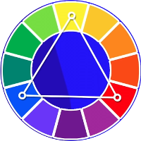
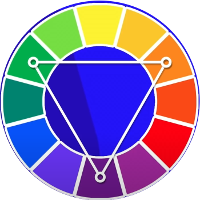
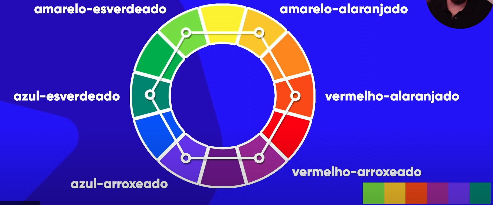

O foco do circulo cromático é basicamente utilizado para podemos hamonizar as cores.
Uma das coisas que devemos preocupar antes de desenvolver um site é a paleta de cores. Geralmente a paleta de cores tem de 3 a 5 cores no máximo, desconsiderando branco e preto que sempre estarão no seu site.
A sincronia (simetria)é uma poderosa arma do designer para criar uma comodidade visual
As coren primárias dentro do círculo cromático são: amarelo vermelho e azul. Elas são cores crosseiras, bem duras de trabalhar
As cores secundárias são: verde laranja e violeta. .Também são cores crosseiras, bem duras de trabalhar
São as cores: amarelo-esverdeado, amarelo-alaranjado, azul-esverdeado, vermelho-alaranjado, azul-arroxeado e vermelho-arroxeado.
São cores que possuem um contraste, são cores opostas
São cores que não possuem um contraste mas possuem uma armonia, são as cores vizinhas